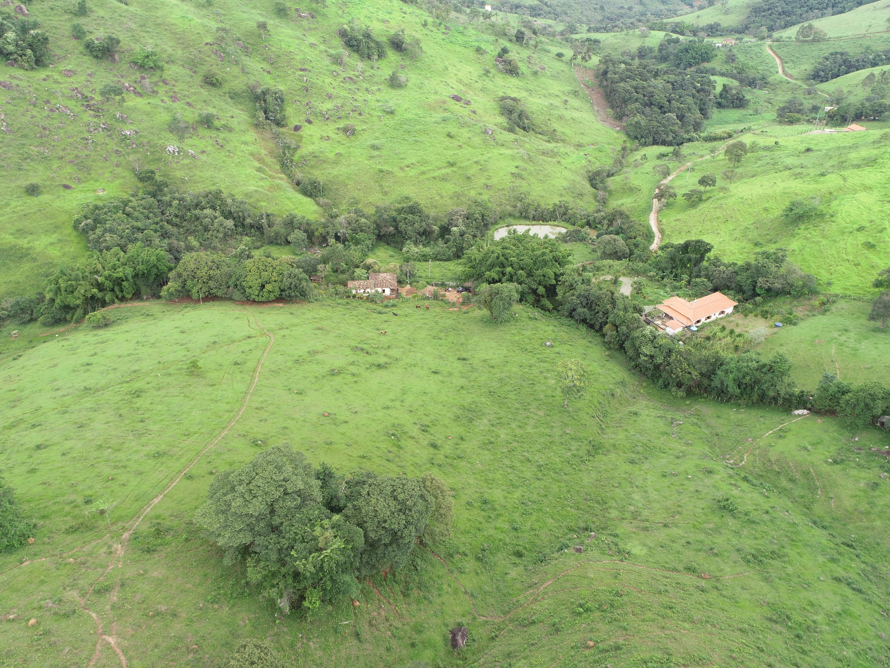
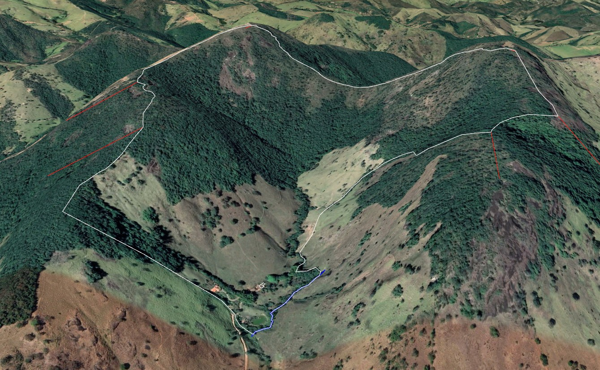

R$ 2,65 O M²
UMA PROPRIEDADE COMPLETA
POR R$ 2.200.000,00
83 Hectares · Mata Nativa · Nascente Cristalina · 65 km de BH
✦ Oportunidade Única
de Investimento · Moeda, MG ✦
O Patrimônio em Números
Vista Aérea & Demarcação
Vista aérea — sede centenária, pastos formados e mata nativa da Fazenda Limoeiro

🗺️ Demarcação 3D dos limites — linha branca: perímetro registrado · linha azul: curso d'água perene
Contexto e Diferenciais
Em Moeda, município encravado na Serra do Quadrilátero Ferrífero a apenas 65 km de Belo Horizonte, existe uma propriedade que reúne o que o mercado raramente coloca à venda: 83 hectares contínuos com vocação múltipla, beleza natural intocada e um preço que, quando dividido por metro quadrado, desafia qualquer comparativo urbano ou rural da região.
São 50 hectares de mata nativa densa e preservada — um ativo ambiental de valor crescente, elegível para projetos de crédito de carbono e reserva legal. Uma nascente cristalina própria e um curso d'água perene garantem independência hídrica total, um diferencial cada vez mais raro e valioso no Brasil. A sede centenária de 150m² em arquitetura colonial de pau a pique e pedra bruta é um patrimônio histórico com potencial para pousada boutique ou retiro exclusivo.
Tudo isso por R$ 2.200.000,00 — apenas R$ 2,65 o metro quadrado.
Monetize os 50 ha de mata nativa via crédito de carbono (VCR/REDD+) ou CRA (Cota de Reserva Ambiental) — receita passiva com valorização garantida por lei e demanda crescente no mercado global de carbono.
Fracione a área em lotes exclusivos e multiplique o investimento com margens expressivas. A 65 km de BH (Belo Horizonte), a demanda por propriedades rurais de qualidade nunca foi tão alta — e a oferta, tão escassa.
42 hectares de pastagem formada e em expansão prontos para operação imediata. Curral estruturado com 250m² em eucalipto serrado, cobertura de 40m², nascente própria e energia elétrica com transformador particular 5kVA.
A sede centenária e o cenário da Serra de Moeda como palco para uma pousada eco-luxo ou retiro de bem-estar exclusivo. Água própria, mata densa, silêncio absoluto — e a capital mineira a apenas uma hora de distância.
Seja para preservar e rentabilizar a mata nativa,
fracionar em chácaras exclusivas a 65 km de BH,
produzir no campo com estrutura já montada ou simplesmente ter um
refúgio de verdade com água própria e silêncio absoluto —
esta propriedade entrega escala, localização e preço que o mercado não repete.
83 hectares · R$ 2.200.000,00 · R$ 2,65 o m²
Patrimônio Histórico
A sede da Fazenda Limoeiro é uma obra viva da arquitetura colonial mineira. Com 150m² construídos em técnica de pau a pique — método secular que utiliza bambu, madeira e argila —, piso de tábua corrida bruta, teto com esteira de bambu e porão em alvenaria de pedra bruta: cada detalhe é autêntico e irreproduzível.
Ao redor, um pomar histórico de 2.000m² aguarda ser revivido. Árvores frutíferas, jardim de ervas aromáticas, varanda com vista para as montanhas.
Para o comprador visionário, esta sede representa uma oportunidade única de projeto de retrofit (modernização preservando a estrutura histórica): transformá-la em uma pousada boutique de luxo rústico ou o refúgio familiar mais fascinante da região.
Sede centenária e construções auxiliares — vista do drone
Localização Privilegiada
Relevo 3D da região — notar a densidade de mata e o curso d'água (linha azul)
Sua Ponte para esse Patrimônio
CRECI-MG Nº 46.689 · Especialista em Imóveis Rurais de Alto Padrão
Com vasta experiência exclusiva no mercado de propriedades rurais de Minas Gerais, Marco Antônio construiu uma reputação sólida baseada em transparência, conhecimento técnico e profundo entendimento do que torna cada imóvel único. Especializado na região metropolitana de BH e no Quadrilátero Ferrífero, já intermediou negociações de alto valor com rigor documental e total comprometimento com os interesses do comprador.
CRECI-MG Nº 50.135 · Especialista em Gestão Fundiária e Negócios Imobiliários
Com sólida atuação no mercado imobiliário mineiro, Márcio Campos consolidou sua trajetória na condução técnica, jurídica e estratégica de negociações imobiliárias urbanas e rurais, destacando-se pela excelência em regularização fundiária e estruturação patrimonial. Reconhecido pela visão consultiva diferenciada, desenvolve soluções pautadas em segurança jurídica, rigor documental e inteligência territorial — com atuação destacada na Região Metropolitana de BH, Vetor Sul e regiões de expansão imobiliária de Minas Gerais.
Dê o Primeiro Passo
Oportunidades como esta não esperam. Entre em contato diretamente com nossos especialistas e agende sua visita à Fazenda Limoeiro com toda a segurança e agilidade que você merece.
A Fazenda em Movimento
Água cristalina brotando da própria terra. A nascente da Fazenda Limoeiro alimenta este curso d'água permanente — um privilégio cada vez mais raro e valioso.